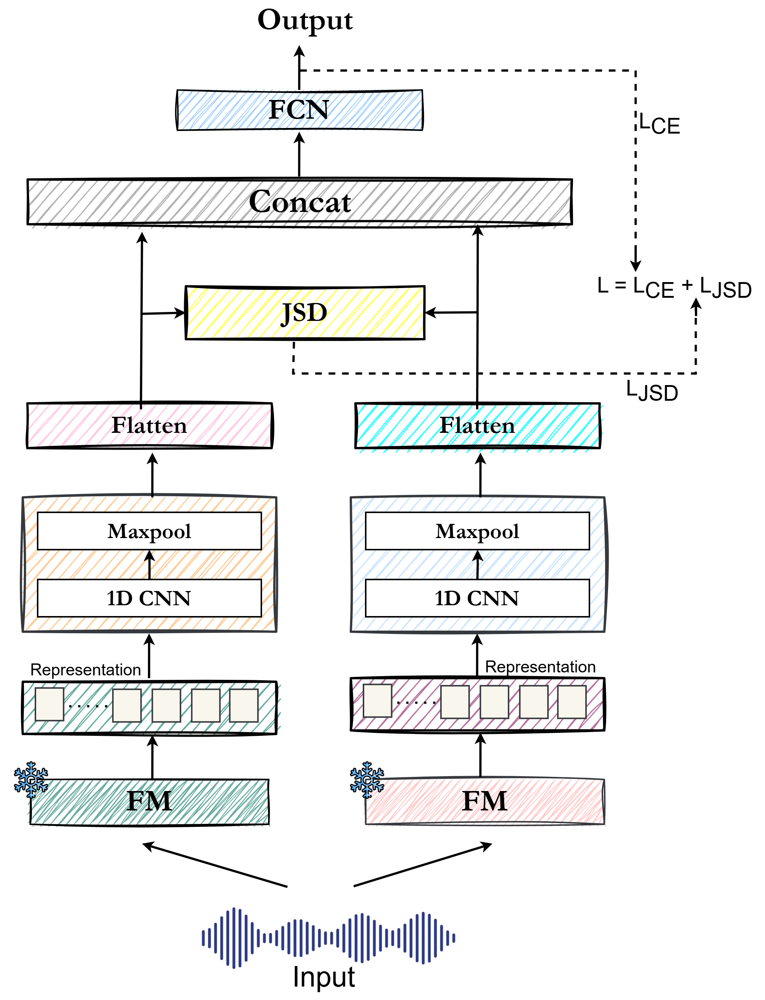

Existing CodecFake detection benchmarks are built almost entirely on younger adult speakers, leaving older adults vulnerable to neural-audio-codec-synthesized deepfakes. We introduce the Elderly CodecFake Detection (ECFD) task and the Elderly-CodecFake (ECF) dataset, pairing authentic elderly speech with codec-resynthesized counterparts, and propose BONSAI, a Jensen-Shannon Divergence based fusion of multimodal foundation models.
ECF comprises 60,749 real elderly utterances and 850,486 NAC-generated counterparts across 14 codec variants, English and Chinese.
In this study, we introduce the Elderly CodecFake Detection (ECFD) task and release the Elderly-CodecFake (ECF) dataset in English and Chinese. We show that state-of-the-art CF detectors trained on previous benchmark CF datasets generalize poorly to elderly speech, revealing a critical vulnerability.
We further hypothesize and demonstrate that multimodal foundation models (FMs) such as LanguageBind (LB) and ImageBind (IB) are more effective for ECFD due to their exposure to elderly content during cross-modal pretraining. Motivated by prior evidence that fusion of FMs enhances downstream performance, we explore fusion of FMs for ECFD.
To this end, we propose BONSAI, a novel framework that employs Jensen-Shannon Divergence as the fusion mechanism. BONSAI with the fusion of LB and IB achieves an average EER (%) of 1.66 and outperforms individual FMs as well as competitive SOTA baselines, establishing a new benchmark for the ECFD task.
BONSAI (Bridging FusiON via JenSen-ShAnnon DIvergence) fuses representations from two foundation models for ECFD. Rather than relying on simple concatenation, BONSAI explicitly aligns the distributional characteristics of heterogeneous FM representations using Jensen-Shannon Divergence (JSD), encouraging the two representations to capture complementary yet consistent information.
Input speech is encoded by two frozen foundation models. We consider speech FMs (Wav2vec2, WavLM, Whisper) and multimodal FMs (LanguageBind, ImageBind), with LanguageBind + ImageBind found to be the strongest pair.
Representations from each FM are passed through a 1D-CNN layer (filter size 3, 32 filters) followed by max-pooling, identical to the CNN downstream baseline.
The pooled features from each branch are flattened and projected to a shared dimensional space to ensure dimensional consistency and reduce computational overhead.
The projected representations are normalized via softmax into probability distributions p and q, and JSD between them is minimized to align the two FM representation spaces in a stable, symmetric manner.
The aligned representations are concatenated and passed to a fully connected network (dense layer with 120 neurons, softmax output) for real-vs-spoof classification.

Figure: The BONSAI framework. Each foundation model (FM) branch is processed by a 1D-CNN and max-pooling, flattened, and aligned via JSD before concatenation and classification.
Alignment Loss
Training Objective
The classification loss L_CE and the JSD alignment loss L_JSD are jointly optimized, with lambda = 0.65 controlling the balance between the two. BONSAI has 3.8M-4.02M trainable parameters depending on the FM representation dimensionality.
Binary real-vs-spoof detection of neural-audio-codec-synthesized elderly speech.
A novel use of Jensen-Shannon Divergence to align heterogeneous FM representation spaces.
Multimodal FMs whose cross-modal pretraining implicitly captures age-related cues.
Lightweight CNN and max-pooling per branch followed by a fully connected classifier.
BONSAI with LanguageBind + ImageBind sets a new SOTA for the ECFD task.
Designed to close the cross-demographic generalization gap left by existing CF detectors.
Table 1: Generalization of SOTA CF detectors to elderly speech (zero-shot)
Models trained on the prior CF benchmark (Lu et al.) generalize poorly to elderly speech. EER nearly doubles on the elderly subset of E2 (TIS) compared to the younger subset, indicating age-related degradation beyond simple distribution mismatch.
| Model | E1 (SeniorTalk) | E2 (TIS Corpus) | |
|---|---|---|---|
| Young | Elderly | ||
| AASIST | 30.18 | 14.07 | 27.45 |
| Wav2vec2-AASIST | 28.32 | 12.89 | 25.76 |
EER (%, lower is better). E1: SeniorTalk, E2: TIS Corpus.
Table 2: In-domain training and evaluation on ECFD
Multimodal FMs (ImageBind, LanguageBind) consistently outperform speech-only FMs (Wav2vec2, WavLM, Whisper) under both AASIST and CNN downstream classifiers, supporting the hypothesis that cross-modal pretraining benefits ECFD.
| Setting | E1 | E2 (Elderly) | Avg |
|---|---|---|---|
| AASIST (End-to-End) | 14.54 | 13.66 | 14.10 |
| Wav2vec2 + AASIST | 11.76 | 11.02 | 11.39 |
| WavLM + AASIST | 11.34 | 10.66 | 11.00 |
| Whisper + AASIST | 10.12 | 9.86 | 9.99 |
| ImageBind + AASIST | 6.53 | 5.79 | 6.16 |
| LanguageBind + AASIST | 6.48 | 5.21 | 5.85 |
| Wav2vec2 + CNN | 11.02 | 10.29 | 10.66 |
| WavLM + CNN | 10.67 | 9.13 | 9.90 |
| Whisper + CNN | 8.46 | 8.14 | 8.30 |
| ImageBind + CNN | 5.41 | 5.26 | 5.34 |
| LanguageBind + CNN | 4.81 | 4.30 | 4.56 |
EER (%, lower is better). Avg is the average EER across E1 and E2 (Elderly).
Table 3: BONSAI fusion vs. concatenation
BONSAI consistently outperforms simple concatenation across all FM pairs, with the largest gains for multimodal and speech+multimodal combinations. The best pair, ImageBind + LanguageBind, achieves a new SOTA average EER of 1.66%.
| Pair | Concatenation | BONSAI | ||||
|---|---|---|---|---|---|---|
| E1 | E2 (Elderly) | Avg | E1 | E2 (Elderly) | Avg | |
| Wav2vec2 + WavLM | 9.36 | 9.01 | 9.18 | 7.54 | 6.97 | 7.26 |
| Wav2vec2 + Whisper | 7.17 | 6.63 | 6.90 | 6.24 | 5.64 | 5.94 |
| Wav2vec2 + ImageBind | 5.20 | 4.79 | 5.00 | 4.87 | 3.22 | 4.05 |
| Wav2vec2 + LanguageBind | 4.47 | 4.22 | 4.35 | 4.00 | 3.76 | 3.88 |
| WavLM + Whisper | 7.94 | 7.35 | 7.65 | 5.68 | 5.17 | 5.43 |
| WavLM + ImageBind | 5.12 | 4.72 | 4.92 | 4.36 | 4.09 | 4.23 |
| WavLM + LanguageBind | 4.86 | 4.43 | 4.65 | 3.92 | 3.56 | 3.74 |
| Whisper + ImageBind | 4.51 | 4.02 | 4.27 | 3.23 | 2.95 | 3.09 |
| Whisper + LanguageBind | 3.78 | 3.14 | 3.46 | 2.78 | 2.36 | 2.57 |
| ImageBind + LanguageBind | 3.01 | 2.50 | 2.76 | 1.80 | 1.51 | 1.66 |
EER (%, lower is better). Avg is the average EER across E1 and E2 (Elderly).
The ECF dataset pairs authentic elderly speech with codec-resynthesized counterparts produced by 14 neural audio codec variants spanning two languages.
Mandarin conversational speech from super-aged seniors (75-85), 55.53 hours of spontaneous dialogue from 202 speakers across 16 provinces. 60,029 real utterances.
Source recordings1,152 utterances from 96 speakers spanning younger (18-45) and older (60+) adults across White, Black, and South Asian backgrounds. 720 real elderly utterances used for ECFD.
Source recordingsDAC (16/24/44 kHz), EnCodec (24/48 kHz), SoundStream (16 kHz), SpeechTokenizer (16 kHz), FunCodec (16 kHz), AudioDec (28/48 kHz), SNAC (24/32/44 kHz), MIMI (24 kHz).
Codec backbones60,749 real elderly utterances paired with 850,486 NAC-generated counterparts across all 14 codec variants, English and Chinese.
Real + Spoof pairsSample rows below are loaded from audio/manifest.js. Each row pairs a real elderly recording with its codec-generated counterpart.
| Codec | Ground Truth ID | GT Speech | Generated Speech | Source |
|---|
If you use the ECF dataset or BONSAI, please cite the paper as follows:
Update page numbers in the citation once the proceedings version is finalized.